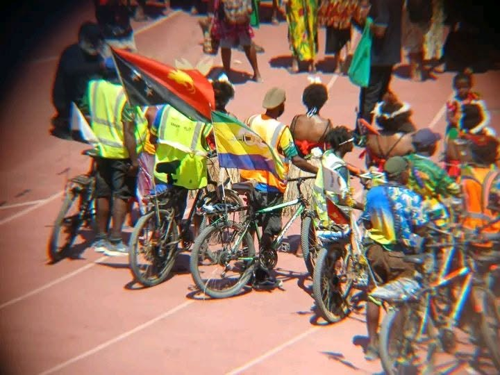
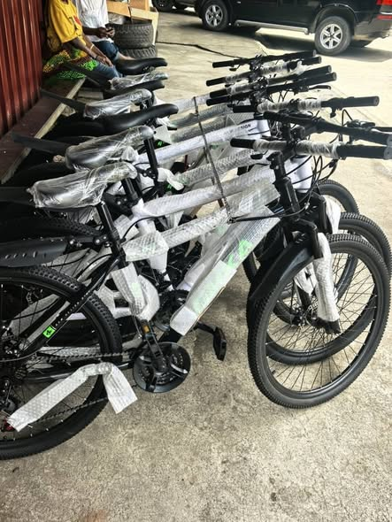

Services, Courses and Prices
Everything the workshop offers, in one place. When you are ready, book a stand or register for a course on the bookings and contact page.
Repair stand sessions
A repair stand session is a two-hour booking at one of our eight work stands. Tools, repair manuals and spare parts are all provided; you do the work, and a volunteer mechanic is there whenever you need a hand. Pay on the day — K10 standard, K5 for members and concession holders. Children repair for free with a paying adult.
Every session includes
- Use of a work stand and the full tool wall
- Step-by-step guidance from a volunteer mechanic
- Consumables such as chain oil, degreaser and brake cleaner
- Access to our library of printed repair manuals
- A free five-point safety check before you ride home
Maintenance courses
Courses run in small groups of no more than eight, so everyone gets bench time. Use one of our workshop bikes or bring your own.
Choosing the right level
The beginners' course assumes no prior experience at all. The wheels-and-gears and advanced courses suit riders who are comfortable with the basics and want to service their own drivetrain or true a wheel. The family class is designed for children aged 8 and over working together with a parent.

| Course | Next intake | Length | Level | Cost |
|---|---|---|---|---|
| Beginners' bike maintenance | Sat 14 June 2026 | 1 session (4 hours) | Beginner | K45 |
| Wheels and gears | Sat 26 July 2026 | 2 sessions | Intermediate | K70 |
| Family fix-up class | Sat 9 August 2026 | 1 session (3 hours) | Family (children 8+) | K30 per adult, kids free |
| Advanced drivetrain and wheel truing | Sat 6 September 2026 | 2 sessions | Advanced | K85 |
All materials are included, and members receive 20% off every course. Register on the bookings page — places are limited to eight per intake.
Bike recycling and donations
Every year our volunteers refurbish more than 200 donated bikes, which are sold at low cost or passed on through local school and charity programs. Bikes that cannot be saved are stripped for parts, and frames go to metal recycling — nothing usable ends up in landfill.

What we can accept
- Road, hybrid and mountain bikes in any condition
- Children's bikes and balance bikes
- Bike parts, tools, tyres and tubes
Sorry, we cannot accept helmets (for safety reasons) or bikes left outside the building outside opening hours.
How to donate
- Check the accepted list above.
- Book a Saturday drop-off on the bookings page — walk-ins are welcome if stands are free.
- Bring the bike to Eriku Oval a Saturday morning and collect a thank-you receipt.
Membership
Annual membership is K100 and includes discounted stand sessions and courses, free safety checks all year, our monthly email newsletter, and voting rights at the annual general meeting. Join online through the bookings form or at the counter.
Ready to book?
Pick your session or course on the bookings and contact page, or call (675)71234567 during opening hours.